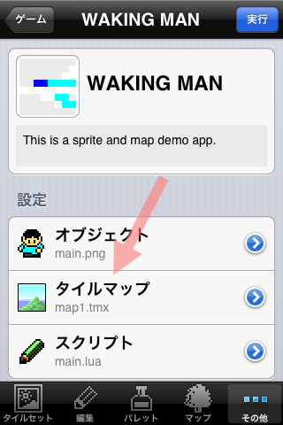
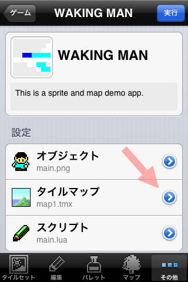
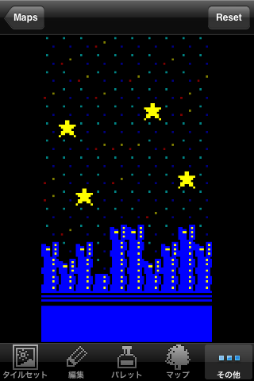

DotEDITORでは内蔵ゲームのマップデータを入れ替えてゲームの背景を変更できます。
例として WAKING MAN サンプルを使って背景を入れ替えます。
下のスクリーンショットではキャラクタを戦闘機に入れ換えています。

DotEDITORのマップエディタで好きな背景を作ります。

マップサイズは画面全体を覆いたいので10x18サイズで作ります。
設定画面からタイルマップをタップして map1.tmx を入れ換えます。

先ほど作った背景を選択して完了をタップします。
このボタンをタップすると背景が入れ替わったことを確認できます。

WAKING MAN では map1.tmx があらかじめ設定されています。
＋ボタンをタップすることで背景データを追加することもできます。
矢印が指しているボタンをタップしてください。
設定した背景を確認することができます。背景を元に戻すには reset ボタンをタップします。

map1.tmxのセルをタップして、作成したマップデータを入れ換えることもできます。

設定画面に戻り実行します。
背景が入れ替わり夜間飛行する戦闘機のアニメーションになりました。